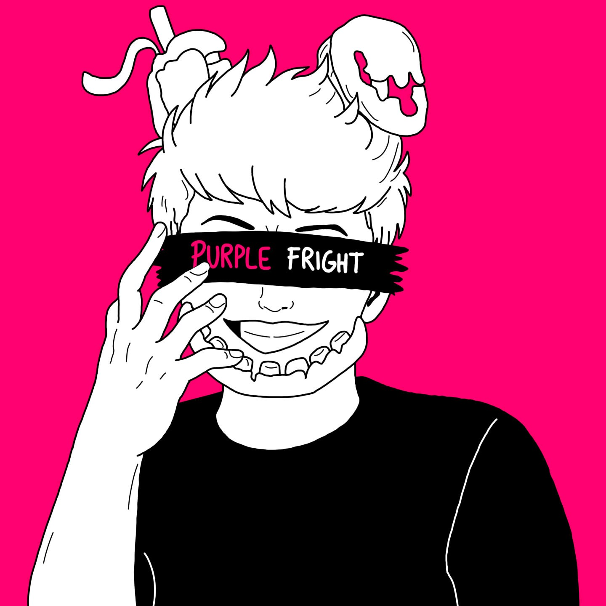

Üdvözlöm a kedves közönséget a Purple Fright csatornán! Ezt a csatornát még anno 2015-ben azzal a céllal hoztam létre, hogy minden elképzelésemet megosszam egy platformon a Five Nights at Freddy's nevű horror játék kapcsán. Nem szeretem a félmunkát, úgyhogy itt a Youtube-on azt tűztem ki célomul, hogy addig nem hagyom abba a videók készítését, amíg meg nem sikerül válaszolnom az összes FNaF-al kapcsolatos kérdést. Amennyiben te is úgy rajongasz ezért a játékért, mint én, akkor nézz körül. Biztos vagyok benne, hogy találni fogsz valamit, ami elnyeri a tetszésedet!